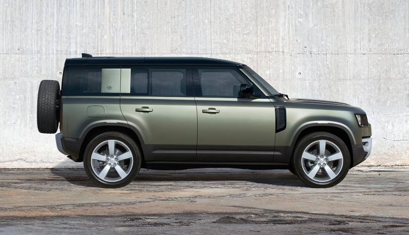
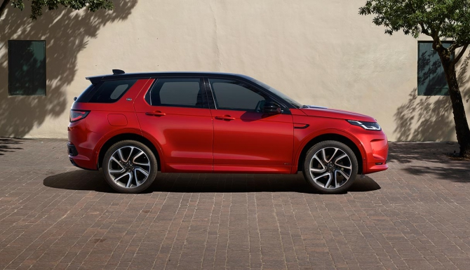
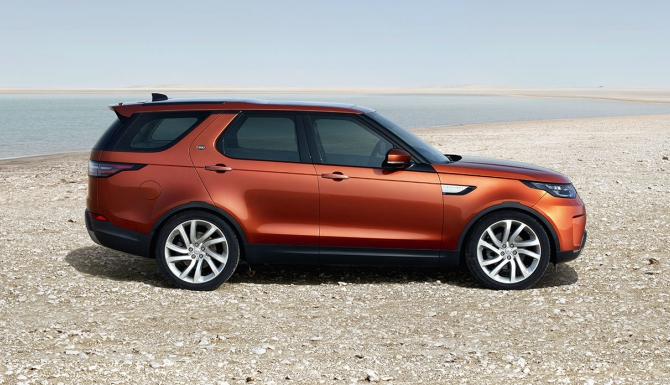
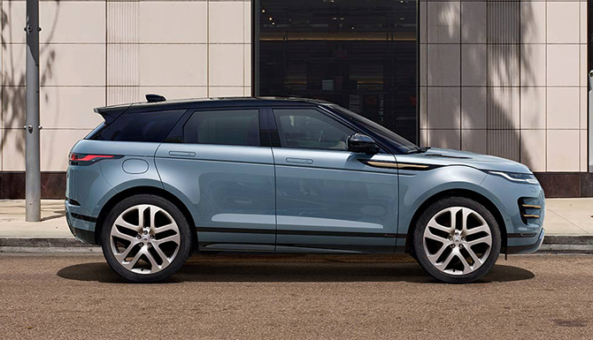
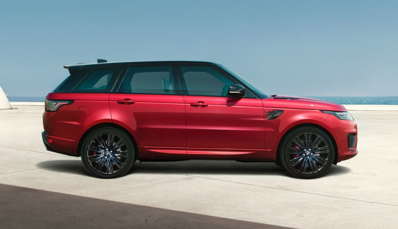
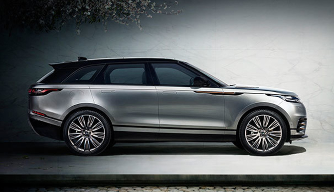

LR is an iconic British brand of four-wheel drive vehicles that is owned by multinational car manufacturer Jaguar Land Rover (JLR), since 2008 a subsidiary of India's Tata Motors. JLR currently build Land Rovers in Brazil, China, India, Slovakia, and the United Kingdom. The Land Rover name was created in 1948 by the Rover Company for a utilitarian four-wheel drive, off-roader; yet today Land Rover vehicles comprise solely upmarket luxury SUV cars.
LR was granted a Royal Warrant by King George VI in 1951, and 50 years later, in 2001, it received a Queen's Award for Enterprise
for outstanding contribution to international trade. Over time, Land Rover grew into its own brand (and for a while also a company),
encompassing a consistently growing range of four-wheel drive, off-road capable models. Starting with the much more upmarket 1970 Range Rover,
and subsequent introductions of the mid-range Discovery and entry-level Freelander line (in 1989 and 1997), as well as the 1990 Land Rover Defender refresh,
the marque today includes two models of Discovery, four distinct models of Range Rover, and after a three-year hiatus, a second genaration of Defenders have
gone into production for the 2020 model year—in short or long wheelbase, as before.
Range Rover Models
|

Range Rover Defender |

Range Rover Discovery Sport |
|

Range Rover Discovery |

Range Rover Evoque |
|

Range Rover Sport |

Range Rover Velar |
Range Rover History
- : Rover's chief designer Maurice Wilks and his associates create a prototype using Jeep chassis and components
- : Announcement from the Ford Motor Company that it plans to sell Land Rover and also Jaguar Cars
- : Ford agreed to sell the Jaguar and Land Rover operations to Tata Motors.
- : Tata Motors finalised their purchase of Jaguar and Land Rover from Ford and put them into their new subsidiary, Jaguar Land Rover
Rover era
The design for the original vehicle was started in 1947 by Maurice Wilks. Wilks, chief designer at the Rover Company, on his farm in Newborough, Anglesey, working in conjunction with his brother Spencer who was the managing director of Rover. The design may have been influenced by the Jeep and the prototype, later nicknamed Centre Steer, was built on a Jeep chassis and axles. The early choice of colour was dictated by military surplus supplies of aircraft cockpit paint, so early vehicles only came in various shades of light green; all models until recently feature sturdy box section ladder-frame chassis. Early vehicles like the Series I were field-tested at Long Bennington and designed to be field-serviced.Ford era
In 2006 Ford also purchased the Rover brand from BMW for around £6 million. BMW had retained ownership of the brand to protect the integrity of the Land Rover brand, with which 'Rover' might be confused in the US 4x4 market and allowed it to be used under licence by MG Rover until it collapsed in 2005, at which point it was offered to the Ford Motor Company, who by then owned Land Rover. On 11 June 2007, Ford announced that it planned to sell Land Rover along with Jaguar Cars. Private equity firms such as Alchemy Partners of the UK, TPG Capital, Ripplewood Holdings, Cerberus Capital Management and One Equity Partners of the US, Tata Motors of India and a consortium comprising Mahindra & Mahindra of India and Apollo Management all initially expressed interest in purchasing the marques from the Ford Motor Company. On 1 January 2008, Ford formally declared that Tata was the preferred bidder. In 2008, On 26 March 2008, Ford announced that it had agreed to sell its Jaguar and Land Rover operations to Tata Motors, and that it expected to complete the sale by the end of the second quarter of 2008.Price
| Models | Price (on 05.06.2020) | Complectation | Availability |
| Range Rover Defender | 100 000$ | HSE | For order |
| Range Rover Discovery Sport | 80 000$ | Vogue | For order |
| Range Rover Discovery | 120 000$ | Autobiografy | For order |
| Range Rover Evoque | 70 000$ | Vogue | For order |
| Range Rover Sport | 90 000$ | HSE | For order |
| Range Rover Velar | 75 000$ | Vogue | For order |
Sales
The success of Land Rover its formation in 2008 is reflected largely in the rising sales of the Range Rover. In 2009, as a severe recession took hold, just over 22,000 were sold. Four years later, it sold more than twice as many units, with more than 45,000 being sold. By 2015, Range Rover sales worldwide exceeded 60,000.
This table excludes Range Rover Sport and Evoque. The total figure is from 2009, excluding those sold prior to that year.
| Year | Sales |
| 2015 | 27,496 |
| 2016 | 45,077 |
| 2017 | 53,738 |
| 2018 | 60,226 |
| 2019 | 55,728 |
| Total | 317,494 |